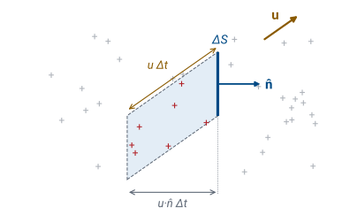
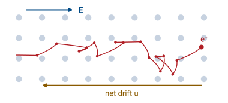
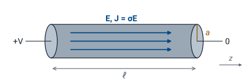
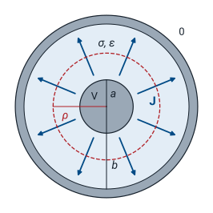

L27 - Current Density, Conductivity, and Resistance#
Current Density, Conductivity, and Resistance
Today we describe current at a point and derive the resistance of a conductor from it.
Lesson 27 · Module 3: Magnetostatics · Maj Ellis · Dr. Neil Rogers
Learning Objectives
- I can calculate the total current through a surface area given a current distribution.
- I can use Ohm's Law for electromagnetics to calculate the relationship between a current distribution and an electric field.
- I can articulate and identify what makes a material a good conductor and how conductivity relates to resistance.
Module 2 held every charge still. Module 3 lets charge move at a steady rate, and steady currents produce the magnetic field that the rest of the module studies. Before we reach the magnetic field, we need a way to describe current at a point inside a conductor, not only as a number on an ammeter. That description is the current density, and integrating it over a surface gives the current through that surface. Next we find what makes charge move in a material: an electric field, related to the current density by Ohm’s law in point form, with the material’s conductivity as the constant of proportionality. The conductivity separates good conductors from insulators, and integrating the point form over a wire recovers the resistance of circuit theory. The same method applied to a coaxial cable gives the conductance \(G'\) that Lesson 3 put in the lumped-element model.
From Static Charge to Steady Current
Lesson 24: inside a conductor in electrostatics, \(\mathbf{E} = 0\).
Connect a battery: it holds a field inside the wire.
The field pushes the free charge, and a current flows.
Steady: the current does not change with time.
Lesson 24 showed that the free charge in a conductor rearranges itself until the field inside is zero, and then nothing moves. A battery prevents that equilibrium. It keeps one end of a wire at a higher potential than the other, so a field persists inside the metal and keeps pushing the free charge along it. The charge flows as a current, and as long as the battery holds its voltage, the current stays constant. A steady current is the subject of this module: charge moves, but the amount of charge at every point stays the same, so the field it produces does not change with time either. Module 4 lifts that restriction.
Charge Crossing a Small Area

Every charge in the slanted tube crosses \(\Delta S\) within the time \(\Delta t\).
To describe current at a point, we picture a small flat area \(\Delta S\), with unit normal \(\hat{\mathbf{n}}\), inside a region where charge of volume density \(\rho_v\) moves with velocity \(\mathbf{u}\). The figure shows the area edge-on. In a short time \(\Delta t\), each charge travels a distance \(u\ \Delta t\) along \(\mathbf{u}\). The charges that cross \(\Delta S\) in that time are exactly the ones that start inside the tube behind it: its end is \(\Delta S\), and its sides run parallel to \(\mathbf{u}\) for the slant length \(u\ \Delta t\). Charges farther back do not reach the area in time, and charges already past it have crossed. Counting the charge in the tube gives the charge that crosses the area, and dividing by \(\Delta t\) gives the current.
Current Density
The slanted tube of the previous frame has the same volume as a straight tube with the same end \(\Delta S\) and the same height, measured along the normal. The tilt shortens that height: the slant length is \(u\ \Delta t\), and its component along \(\hat{\mathbf{n}}\) is \(\mathbf{u}\cdot\hat{\mathbf{n}}\ \Delta t\), so the volume is \(\left(\mathbf{u}\cdot\hat{\mathbf{n}}\ \Delta t\right)\Delta S\). The charge in the tube is the volume density times that volume. Dividing by \(\Delta t\) gives the current through \(\Delta S\), and the factor \(\rho_v\mathbf{u}\) that multiplies \(\hat{\mathbf{n}}\ \Delta S\) is the current density \(\mathbf{J}\), in amperes per square meter. It is a vector: it points along the motion of positive charge, and its magnitude is the current per unit area through a surface perpendicular to it.
Current Through a Surface
Add the currents through every small piece \(d\mathbf{s} = \hat{\mathbf{n}}\ ds\):
The direction of \(d\mathbf{s}\) sets the sign of \(I\).
A large surface is a collection of small pieces, and the current through it is the sum of the currents through the pieces. Each piece contributes \(\mathbf{J}\cdot\hat{\mathbf{n}}\ ds\), and in the limit of small pieces the sum becomes the surface integral of the current density. This is the same flux integral that Lesson 20 used for \(\mathbf{D}\) in Gauss’s law, now applied to \(\mathbf{J}\): the current through a surface is the flux of the current density through it. We choose the direction of \(d\mathbf{s}\) when we set up the problem, and a negative \(I\) means the current flows opposite to the direction we chose.
Worked Example: Current in a Wire
Worked example — uniform and nonuniform current in a round wire
A wire of radius \(a\) lies along the \(z\) axis, and we want the current through its cross section, with \(d\mathbf{s} = \hat{\mathbf{z}}\ \rho\ d\rho\ d\phi\) in cylindrical coordinates from Lesson 17. The current density points along \(\hat{\mathbf{z}}\), so \(\mathbf{J}\cdot d\mathbf{s} = J_z\ \rho\ d\rho\ d\phi\). When \(J_z\) does not depend on \(\phi\), the \(\phi\) integral gives \(2\pi\).
For the uniform case from the Spring 2025 slides, \(J_z = 8\ \text{A/m}^2\) and \(a = 3\) mm:
Now suppose the current crowds toward the surface, as Lessons 3 and 5 described for high frequencies, with \(J_z = J_0\ \rho/a\). The integral is
With \(J_0 = 2\ \text{A/mm}^2 = 2 \times 10^6\ \text{A/m}^2\) and \(a = 1\) mm, the current is \(4.19\) A, two thirds of the \(6.28\) A that the same peak density would carry if it filled the wire uniformly, so for a nonuniform \(\mathbf{J}\) we integrate rather than multiply by the area.
Continuity of Steady Current
For a closed surface \(S\) around a volume \(V\):
No process creates or destroys charge, so the net current flowing out through a closed surface equals the rate at which the charge inside decreases. For a steady current, charge cannot pile up anywhere, because a growing pile would change the field with time; the enclosed charge is constant, and the net current out of every closed surface is zero. This is Kirchhoff’s current law from Lesson 3, applied to any closed surface instead of a circuit node. The divergence theorem from Lesson 17 turns the surface integral into a volume integral of \(\nabla\cdot\mathbf{J}\), and an integral that is zero over every volume requires the integrand to be zero at every point. Lesson 29 needs this point form, and Lesson 33 removes the steady assumption.
Why Current Follows the Field

In a metal, each atom releases about one electron that moves freely through the crystal. A field pushes each free electron, of mass \(m\), with the force \(-e\mathbf{E}\), so between collisions its velocity changes at the rate \(-e\mathbf{E}/m\). Each collision with the vibrating lattice scatters the electron in a random direction, which erases its directed motion. With an average time \(\tau\) between collisions, the directed velocity the field adds averages to \(-e\tau\mathbf{E}/m\), while the random parts average to zero. The result is a drift velocity proportional to the field and opposite to it, \(\mathbf{u} = -\mu_e\mathbf{E}\), where the mobility \(\mu_e = e\tau/m\), in \(\text{m}^2/(\text{V}\cdot\text{s})\), measures how easily the electrons move. The charge density of the free electrons is \(\rho_v = -ne\). The two minus signs cancel, so the current density points along \(\mathbf{E}\) and is proportional to it. This is Ohm’s law in point form, and the constant of proportionality is the conductivity \(\sigma\), in siemens per meter.
Worked Example: Drift in Copper
\(1\) A in a copper wire of cross section \(1\ \text{mm}^2\); \(n = 8.5 \times 10^{28}\ \text{m}^{-3}\):
Quantity |
Value |
|---|---|
\(J = I/A\) |
\(1.0 \times 10^6\ \text{A/m}^2\) |
\(E = J/\sigma\) |
\(17.2\ \text{mV/m}\) |
\(u = J/(ne)\) |
\(0.073\ \text{mm/s}\) |
Worked example — the field and the drift speed in a wire
A current of \(1\) A flows uniformly through a copper wire of cross section \(A = 1\ \text{mm}^2 = 10^{-6}\ \text{m}^2\). The current density is \(J = I/A = 10^6\ \text{A/m}^2\). Copper has \(\sigma = 5.8 \times 10^7\) S/m, so the field that drives this current is
A meter of this wire drops only \(17.2\) mV at \(1\) A, which is why we treat copper wiring as an ideal conductor in circuits. Copper has \(n = 8.5 \times 10^{28}\) free electrons per cubic meter, so the drift speed is
The electrons drift at \(0.073\) mm/s, about a quarter of a meter per hour. A signal still crosses a meter of cable in nanoseconds, because the signal is the wave of Lesson 4 traveling along the line, not the motion of any one electron. The same numbers give copper’s mobility, \(\mu_e = \sigma/(ne) = 4.3 \times 10^{-3}\ \text{m}^2/(\text{V}\cdot\text{s})\), and from \(\mu_e = e\tau/m\) the average time between collisions is \(\tau = m\mu_e/e = 2.4 \times 10^{-14}\) s.
Conductivity of Common Materials

A good conductor has \(\sigma > 10^5\) S/m; a good insulator, \(\sigma < 10^{-10}\) S/m.
Conductivity spans more orders of magnitude than almost any other material property. The metals sit near \(10^7\) S/m, with copper the best of the common ones and aluminum close behind. Carbon conducts well enough to make resistors. Seawater conducts because its dissolved salt supplies ions that carry charge, and tap water conducts less because it carries less salt; distilled water, with almost no ions, conducts very little. Pure silicon sits below seawater. Good insulators such as glass and polyethylene fall below \(10^{-10}\) S/m, left of the dashed insulator line, and free space, with no charge to move, has \(\sigma = 0\). The two thresholds are conventions, the ones Ellingson’s Chapter 6 uses, not physical boundaries. Lesson 33 compares the conduction current \(\sigma E\) with the displacement current \(\omega\epsilon E\), and the comparison gives the thresholds a meaning: for copper at 100 MHz, \(\sigma/(\omega\epsilon_0) = 5.8 \times 10^7/(5.6 \times 10^{-3}) = 1.0 \times 10^{10}\), so the conduction current dominates completely. The red marker is the RG-58 dielectric at 100 MHz, which the last frames of this lesson compute.
What Makes a Good Conductor
Carriers (\(\text{m}^{-3}\)) |
Mobility (\(\text{m}^2/\text{V}\cdot\text{s}\)) |
\(\sigma\) (S/m) |
|
|---|---|---|---|
Copper |
\(n = 8.5 \times 10^{28}\) |
\(0.0043\) |
\(5.8 \times 10^7\) |
Silicon |
\(n = p = 1.5 \times 10^{16}\) |
\(0.14 + 0.045\) |
\(4.4 \times 10^{-4}\) |
A semiconductor carries current with two kinds of carrier: free electrons, of density \(n\) and mobility \(\mu_n\), and holes, the vacancies an electron leaves behind, which move as positive charges with density \(p\) and mobility \(\mu_p\). Each kind adds its own term to the conductivity. Pure silicon at room temperature has \(1.5 \times 10^{16}\) of each per cubic meter, so \(\sigma = 1.602 \times 10^{-19} \times 1.5 \times 10^{16} \times (0.14 + 0.045) = 4.4 \times 10^{-4}\) S/m. Silicon’s electrons are about 30 times more mobile than copper’s, yet copper conducts \(10^{11}\) times better, because it has more than \(10^{12}\) times as many carriers. The number of free carriers decides whether a material is a good conductor; the mobility adjusts the result within each class.
Resistance of a Wire

Uniform wire, steady current: \(\mathbf{E} = \hat{\mathbf{z}}\ E\) is the same everywhere inside.
A wire of length \(\ell\) and radius \(a\), with conductivity \(\sigma\), has its end at \(z = 0\) held at voltage \(V\) and its end at \(z = \ell\) at zero. The current density is \(\sigma\mathbf{E}\) and points along the wire. With a steady current, the same current crosses every cross section, because \(\nabla\cdot\mathbf{J} = 0\) allows no charge to collect between them; every cross section has the same area, so \(\mathbf{J}\), and with it \(\mathbf{E}\), has the same magnitude all along the wire. At DC the current density is also uniform across each cross section. No current crosses the side surface of the wire, and a uniform axial field meets that condition and satisfies the Laplace equation of Lesson 23 inside the metal, so by the uniqueness result of Lesson 23 it is the field. The field is therefore a constant \(\hat{\mathbf{z}}\ E\) throughout the metal, and we can find the voltage and the current from it.
Deriving the Resistance
The voltage of the \(z = 0\) end relative to the \(z = \ell\) end is the line integral from Lesson 22, \(V_{21} = -\int_{P_1}^{P_2}\mathbf{E}\cdot d\mathbf{l}\), taken from the low end at \(z = \ell\) to the high end at \(z = 0\) with \(d\mathbf{l} = \hat{\mathbf{z}}\ dz\). Reversing the limits cancels the minus sign, and the voltage is the field times the length. The current is the flux of \(\mathbf{J} = \sigma E\ \hat{\mathbf{z}}\) through the cross section of area \(A = \pi a^2\), and since \(\mathbf{J}\) is uniform, the integral is \(\sigma E A\). The ratio of voltage to current is the resistance. The field cancels, which confirms that the resistance depends only on the material and the geometry: it grows with length and falls with conductivity and cross-sectional area.
Worked Example: The RG-58 Center Conductor
\(a = 0.405\) mm, copper:
At 100 MHz the center conductor carries its current in a skin depth \(\delta = 6.6\ \mu\)m: \(R' = 1.03\ \Omega\)/m, \(31\) times larger.
The center conductor of RG-58 has radius \(a = 0.405\) mm, so its cross section is \(A = 5.15 \times 10^{-7}\ \text{m}^2\), and a meter of it has a DC resistance of \(33.5\) m\(\Omega\). At high frequency the current crowds toward the surface of each conductor, as Lessons 3 and 5 described. This is the skin effect: the current density falls off with depth below the surface, and most of the current flows within a skin depth
for copper at 100 MHz. This lesson quotes \(\delta\): it comes from the wave inside a conductor, which Lesson 36 derives from the time-varying fields of Module 4. Treating the current as a layer of thickness \(\delta\) around the circumference, the area is \(2\pi a\delta\) in place of \(\pi a^2\), and \(\ell/(\sigma A)\) gives \(R' = 1/(\sigma\ 2\pi a\delta) = 1.03\ \Omega\)/m, \(31\) times the DC value. The shield, of inner radius \(b = 1.475\) mm, adds \(1/(\sigma\ 2\pi b\delta) = 0.28\ \Omega\)/m, and the sum, \(1.31\ \Omega\)/m, is the \(R'\) that Lesson 5 used from the equation sheet.
Leakage Through a Coax Dielectric

Voltage \(V\) on the inner conductor, \(0\) on the shield; the dielectric has a small \(\sigma\).
The same current crosses every cylinder of radius \(\rho\).
No real insulator has \(\sigma = 0\). When the dielectric of a coaxial line conducts slightly, the voltage between the conductors drives a small current straight through the dielectric, from the inner conductor of radius \(a\) to the shield of radius \(b\). By symmetry the leakage current flows radially. This is the shunt conductance \(G'\) that Lesson 3 placed between the conductors in the lumped-element model, and we find it with the same steps as the resistance of the wire: find \(\mathbf{E}\), integrate it for the voltage, take the flux of \(\sigma\mathbf{E}\) for the current, and divide. The current now spreads over cylinders of growing area instead of flowing through a fixed cross section.
Deriving the Leakage Conductance
Charge \(\rho_\ell\) per meter on the inner conductor, length \(\ell\):
The field and the voltage come directly from Lesson 25: a line charge density \(\rho_\ell\) on the inner conductor gives a radial field that falls as \(1/\rho\), and its line integral from the shield to the inner conductor gives a voltage proportional to \(\ln(b/a)\). With a steady leakage current and a uniform \(\sigma\), \(\nabla\cdot\mathbf{J} = 0\) means \(\nabla\cdot\mathbf{E} = 0\) in the dielectric, so the field obeys the same Laplace equation as in Lesson 23 and keeps the same form. The current crosses a cylinder of radius \(\rho\) and length \(\ell\) with \(d\mathbf{s} = \hat{\boldsymbol{\rho}}\ \rho\ d\phi\ dz\). The factor \(\rho\) in the area cancels the \(1/\rho\) in the field, so the same current crosses every such cylinder, as \(\nabla\cdot\mathbf{J} = 0\) requires. The conductance is the current over the voltage, and the line charge density cancels. The conductance grows with length, because each meter of cable is another leakage path in parallel, so the transmission-line quantity is \(G'\).
G′ and C′
RG-58 at 100 MHz: \(G' = 1.22 \times 10^{-5}\) S/m in Lesson 5 gives \(\sigma = 2.5\ \mu\)S/m.
Lesson 25 derived \(C' = 2\pi\epsilon/\ln(b/a)\) for the same geometry. The logarithm, which carries all of the geometry, appears in both results, so their ratio depends only on the dielectric: \(G'/C' = \sigma/\epsilon\). Once we know the capacitance per meter of a line, we know its conductance per meter for any dielectric conductivity, without a second derivation. For RG-58, \(\epsilon = 2.25\epsilon_0\) and \(C' = 96.8\) pF/m, so the \(G'\) that Lesson 5 used at 100 MHz corresponds to
That effective conductivity comes from the polyethylene’s loss at 100 MHz, not from a current at DC. Lesson 5 wrote the same loss as \(G' = \omega C'\tan\delta\), and the ratio \(G'/C' = \sigma/\epsilon\) turns it into an effective conductivity directly:
the same value. It lies thirteen orders of magnitude below the conductivity of the copper around it, which is why the dielectric term in Lesson 5’s attenuation was so small.
Summary
Symbol / idea |
What it is |
Result |
|---|---|---|
\(\mathbf{J}\) |
Current per unit area, along the motion of positive charge |
\(\mathbf{J} = \rho_v\mathbf{u}\), in A/m² |
Current through \(S\) |
Flux of \(\mathbf{J}\) |
\(I = \int_S \mathbf{J}\cdot d\mathbf{s}\) |
Steady current |
No charge piles up |
\(\oint \mathbf{J}\cdot d\mathbf{s} = 0\), \(\nabla\cdot\mathbf{J} = 0\) |
Ohm’s law, point form |
Drift of free carriers in a field |
\(\mathbf{J} = \sigma\mathbf{E}\) |
\(\sigma\) |
Carrier density times charge times mobility |
\(\sigma = e(n\mu_n + p\mu_p)\); copper \(5.8 \times 10^7\) S/m |
Good conductor |
Many free carriers |
\(\sigma > 10^5\) S/m |
Skin depth |
Depth of the current at high frequency (quoted) |
\(\delta = 1/\sqrt{\pi f\mu\sigma}\); copper at 100 MHz, \(6.6\ \mu\)m |
Wire |
Uniform \(\mathbf{E}\) and \(\mathbf{J}\) |
\(R = \ell/(\sigma A)\) |
Coax leakage |
Radial \(\mathbf{J}\) through the dielectric |
\(G' = \frac{2\pi\sigma}{\ln(b/a)}\), \(G'/C' = \sigma/\epsilon\) |
Practice
Where This Is Going
Lesson 28: a steady current produces a magnetic field, by the Biot-Savart law.
Lesson 29: Ampere’s law, which needs \(\nabla\cdot\mathbf{J} = 0\).
Lesson 30: the coaxial \(L'\), and with it \(Z_0\).
Today we described current at a point and connected it to the field that drives it. A steady current does more than carry charge: it produces a magnetic field around it, and Lesson 28 finds that field from the current by the Biot-Savart law, the magnetic counterpart of Coulomb’s law. Lesson 29 derives Ampere’s law, whose point form is consistent only because a steady current has \(\nabla\cdot\mathbf{J} = 0\). Lesson 30 applies Ampere’s law to the coaxial line and derives \(L'\), the last of the four line constants.
Before Lesson 28, read sections 7.1 through 7.3 of Ellingson, Electromagnetics, Vol. 1.